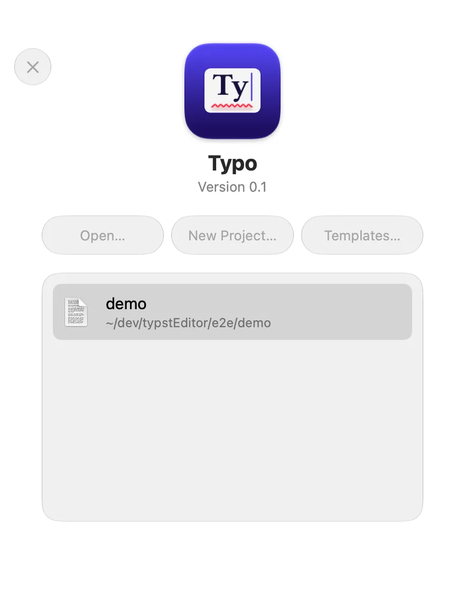
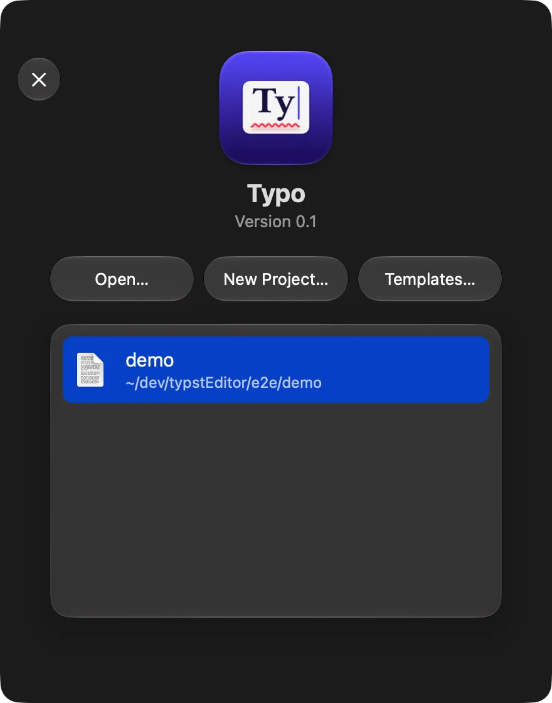
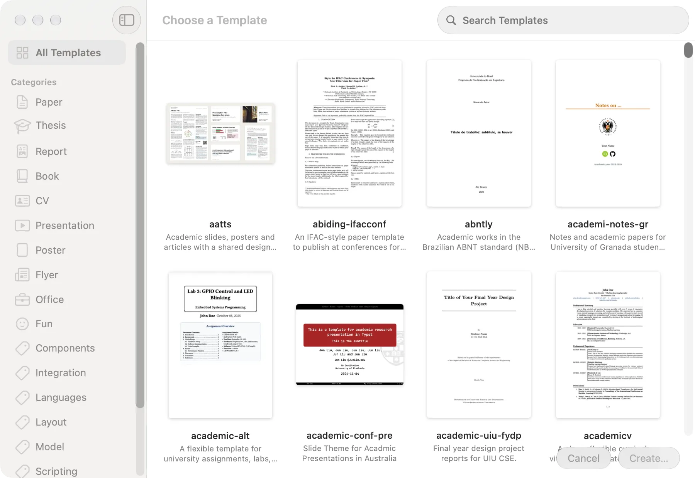
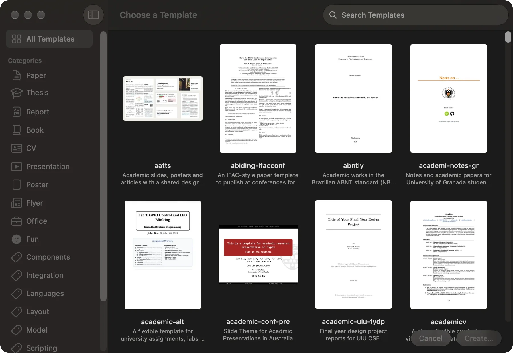
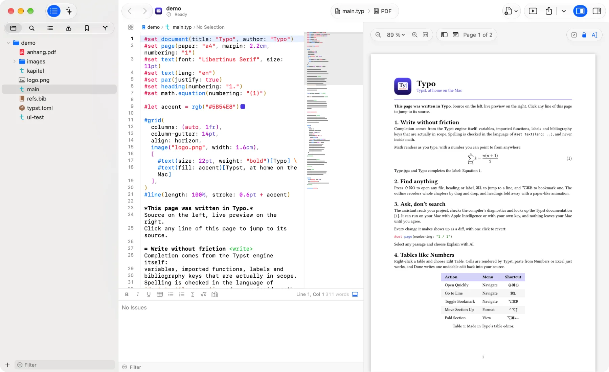
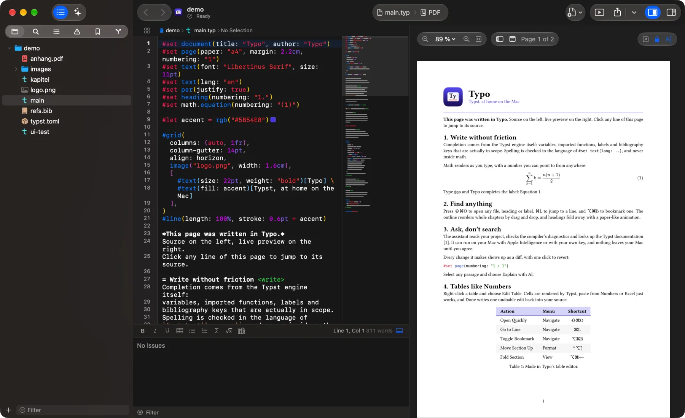

Getting started
To go from download to a first PDF, follow the steps below.
Install and first launch
- Download the latest release from GitHub Releases. Typo requires macOS 27.
- Move Typo to your Applications folder and open it.
- The first time, macOS says it can't check Typo for malicious software, because Typo isn't notarized by Apple yet. Choose Done, then open System Settings › Privacy & Security, scroll to Security and click Open Anyway next to the message about Typo. You only do this once.
- The welcome window opens. It has the buttons Open…, New Project… and Templates…, and a list of your recent projects.
Tip: If you prefer the Terminal, this does the same as Open Anyway: xattr -dr com.apple.quarantine /Applications/Typo.app


Open a folder or create a project
A Typo project is a folder. To open one, choose File › Open… (⌘O) and pick the folder.
To create a new one, choose File › New Project… (⌘N). Typo creates the project in a folder you choose and opens it in a new window.
New Project from Template
To start from a template, choose File › New Project from Template…. The template gallery lists the templates of Typst Universe, with categories, search and a page preview. Pick one to create the project from it.
If the list cannot be loaded, Typo says so. Check your network connection and open the gallery again.


Add files
To add files to a project, choose File › New File… (⌥⌘N) or File › New Folder… (⇧⌘N). You name the new item in the file tree.
The main file
Typst compiles one main file, and every other file reaches the document through it. The scheme capsule in the toolbar shows the main file and the export target. The preview shows the main document, even while you edit another file. To preview the file you are editing instead, turn off View › Lock Preview Document.
The preview
The preview sits beside the editor. Settings › General › Live preview chooses when it updates: While Typing, or On Save (autosave counts as a save).
Click a spot in the preview to jump to the source that produced it. For zoom, thumbnails and the other controls, see Preview and export.


Your first export
- Choose File › Export › PDF… (⇧⌘E).
- Choose a name and place in the save panel.
If a font in your document is not installed, Typo warns you before it exports. See Troubleshooting. Other formats are covered in Preview and export.